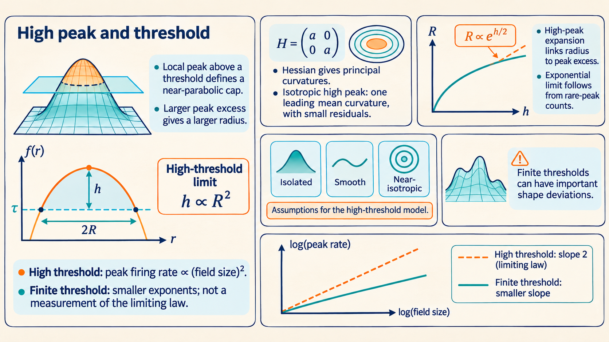
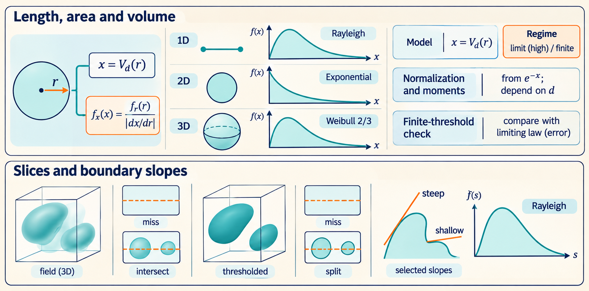
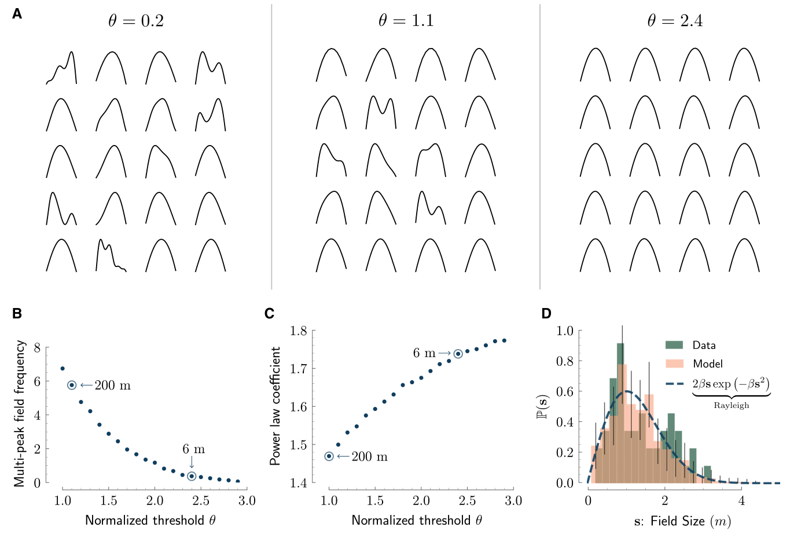
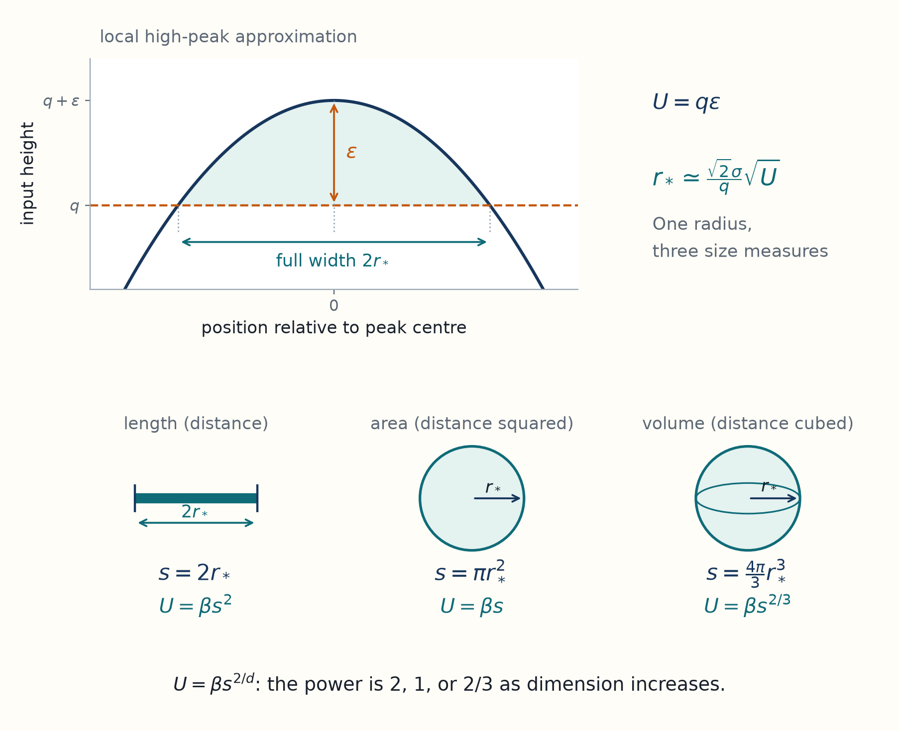
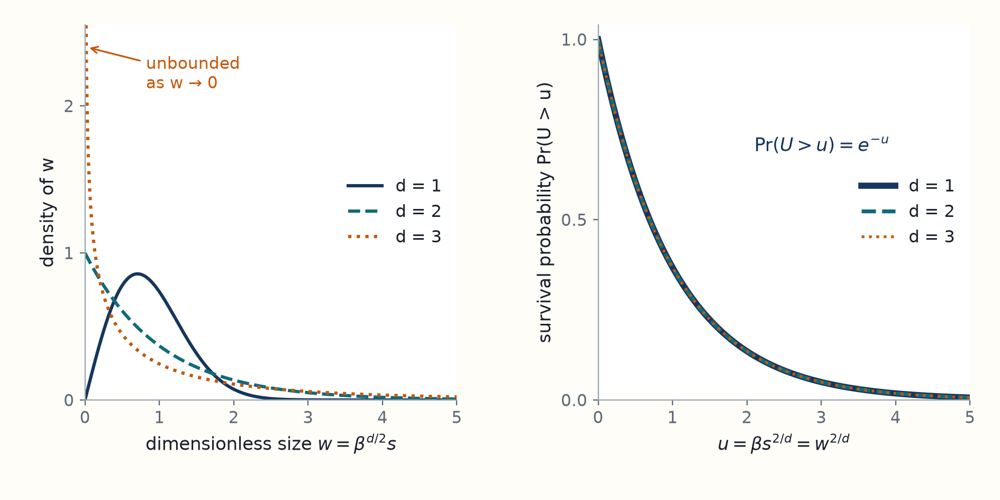
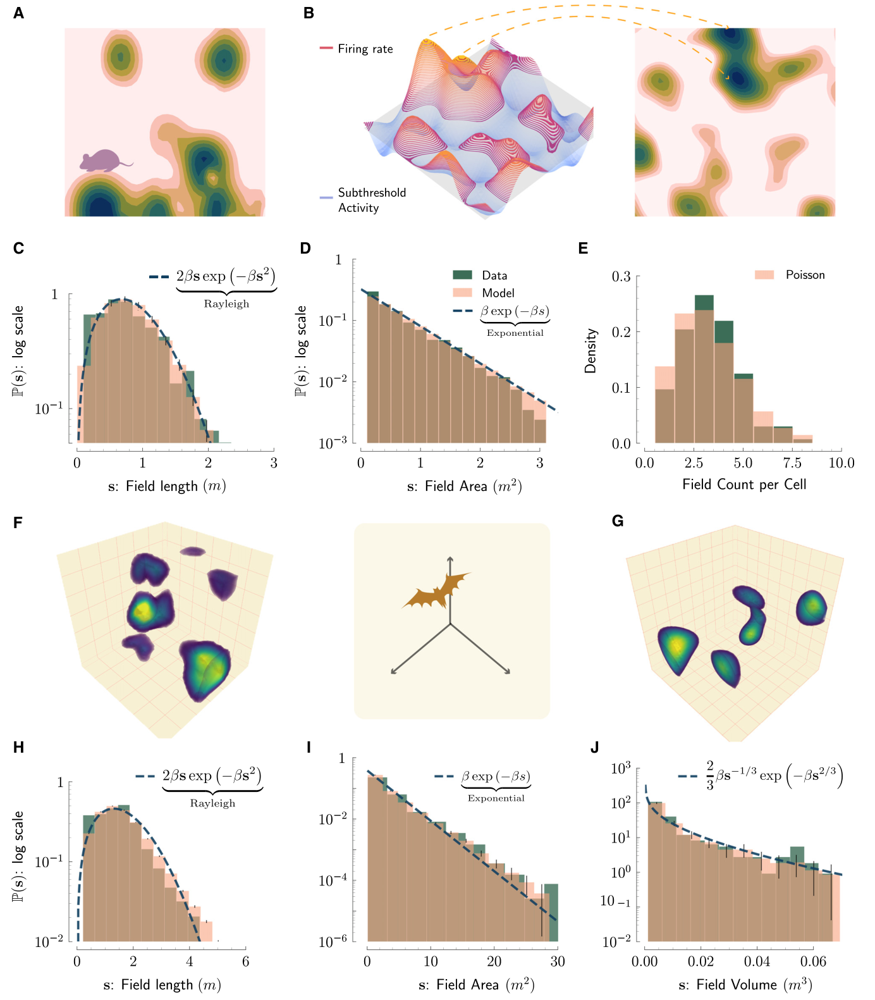
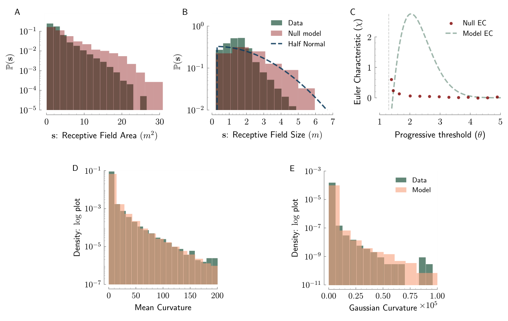
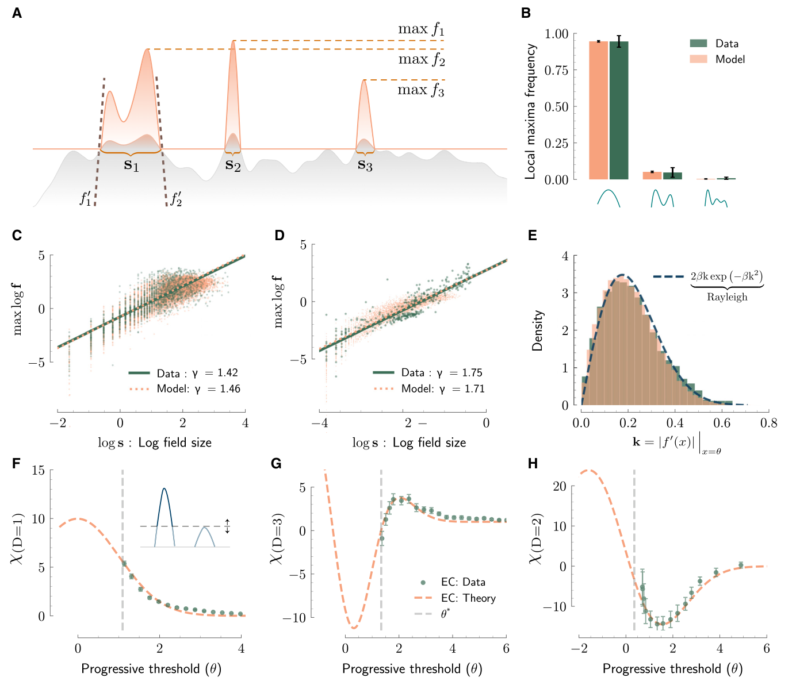

11 High peaks explain size laws across dimensions
A place cell’s active regions can have different sizes on a route, across a floor, or in a flight volume. This chapter derives why the spatial model predicts different field-size distributions in one, two, and three dimensions, and identifies the high-threshold approximation used in that derivation.
Knowing the average field length does not tell us how often fields fall within a given size range. Why should the same spatial model give one size distribution on a track, another in an arena, and a third in a room? The next step is to find the shape of a typical field when only unusually high input peaks rise above the threshold.
Near such a peak, the smooth input is approximately a downward parabola. Its height above the threshold sets a radius, and converting that radius into length, area or volume gives the different size laws. Cuts through a map test its spatial structure, and slopes at field edges provide a separate check on the predicted field widths. The size laws use a high threshold approximation. The boundary-slope law has a separate exact derivation under the smooth stationary Gaussian assumptions.
We keep the earlier notation: \(z(x)\) is the spatial input normalized to variance one, \(q\) is its threshold, \(\sigma\) is its local distance scale, and \(a\) converts positive excess input into firing rate. The number of spatial dimensions is \(d\). The firing rule remains \(F(x)=a[z(x)-q]_+\), where \([u]_+=\max(u,0)\).
The central prediction is the paper’s Equation 1: in the high-threshold limit, the probability density of a field of size \(s>0\) is
\[ p_d(s)=\frac{2\beta}{d}s^{2/d-1}\exp\!\left(-\beta s^{2/d}\right). \]
Here \(d\) is the number of spatial dimensions; \(s\) means length in 1D, area in 2D, and volume in 3D. The positive scale is \(\beta=q^2/(2\sigma^2v_d^{2/d})\) in the high-threshold geometry, where \(v_d\) is the volume of the unit ball: \(v_1=2\), \(v_2=\pi\), and \(v_3=4\pi/3\). It depends on the threshold and local spatial scale. For instance, \(d=1\) gives a Rayleigh-shaped length density, while \(d=2\) gives an exponential area density. This is an asymptotic prediction for high thresholds, not an exact law for every finite threshold.
[Development: from high peaks to the size density] Select a typical field away from an environment boundary and let \(\epsilon\) be its peak’s excess above the high threshold \(q\). The paper’s high-excursion argument gives \(U=q\epsilon\) an approximately exponential distribution of mean one as \(q\to\infty\). In one dimension this follows from the ratio of high upcrossing densities: the chance that a selected peak above \(q\) also exceeds \(q+u/q\) approaches \(e^{-u}\). In higher dimensions the ratio of the additional leading peak-count factors tends to one in the same limit. This step assumes the smooth, stationary, isotropic Gaussian model and well-separated high fields; it is an approximation, not a proof for every covariance or a finite-threshold identity.
Near such a high peak, put the peak at \(x=0\). Its average curvature is approximately \(-q/\sigma^2\) in each spatial direction, so \(z(x)-q\simeq\epsilon-q\|x\|^2/(2\sigma^2)\). The threshold crossing occurs at radius \(r_*\simeq\sigma\sqrt{2\epsilon/q}\). An approximately round field therefore has size
\[ s\simeq v_dr_*^d=v_d\left(\frac{\sqrt2\sigma}{q}\right)^d U^{d/2}, \qquad U=\beta s^{2/d},\qquad \beta=\frac{q^2}{2\sigma^2v_d^{2/d}}. \]
For a possible size \(S>0\), the high-threshold approximation makes the events \(s\le S\) and \(U\le\beta S^{2/d}\) approximately equivalent. With \(\Pr(U>u)\to e^{-u}\), the high-threshold approximation gives \(\Pr(s\le S)\simeq1-e^{-\beta S^{2/d}}\). Differentiating it gives \(p_d(S)=(2\beta/d)S^{2/d-1}e^{-\beta S^{2/d}}\), the formula above. The derivative supplies the change-of-variable factor; it is why simply relabeling the exponential density would give the wrong result. The following sections expand the peak and geometry arguments, their conditions, and finite-threshold checks.
Unreviewed draft diagrams. These AI-generated overviews may contain incorrect labels, arrows, formulas, or numbers. Use the chapter text and cited papers for the scientific claims.


11.1 Near a high peak, the input is nearly parabolic
The peak-geometry introduction explains why radius depends on peak excess and why dimension changes the size law. Here its distance scale \(\ell_c\) is written \(\sigma\), and the curvature approximation is derived explicitly.
The crossing calculation determines a mean length exactly, but it does not yet explain the shape of the length histogram. To obtain that distribution, we examine the small region around a peak that barely exceeds a high threshold.
The following is a teaching reconstruction of the high excursion argument in Methods S4, with algebraic corrections made explicit below. It assumes:
- a sufficiently smooth, stationary, isotropic, unit variance Gaussian field.
- an invertible covariance matrix for the relevant derivative variables.
- the limit \(q\to\infty\).
- typical components counted once each, away from environment boundaries.
It is not a proof of the full excursion convergence theorem for every allowed covariance.1
The Hessian is the matrix \(H\) of second spatial derivatives. Its eigenvalues describe curvature along the principal directions. At a point \(x_0\) where the gradient is zero, a small displacement \(\delta x\) changes the normalized input approximately by
\[ z(x_0+\delta x)-z(x_0)\simeq\tfrac12\delta x^T H\delta x, \qquad H_{ij}=\left.\frac{\partial^2z}{\partial x_i\partial x_j}\right|_{x_0}. \]
For this smooth scalar field, \(H\) is symmetric and has perpendicular principal directions. Along a unit eigenvector, the corresponding eigenvalue is the second derivative in that direction: negative curvature bends the map downward, positive curvature upward. The entries of \(H\) have inverse distance squared units because \(z\) is dimensionless.
Example: curvature distinguishes a peak from a saddle
Take two displacement coordinates in metres and put the critical point at the origin. For \(H=\operatorname{diag}(-2,-8)\) m\(^{-2}\), the local quadratic is \(z-z(0)=-(x_1/\mathrm{m})^2-4(x_2/\mathrm{m})^2\). The surface falls in both directions, more steeply along \(x_2\), so the origin is a peak. With \(H=\operatorname{diag}(-2,8)\) m\(^{-2}\) it falls along \(x_1\) but rises along \(x_2\): the origin is a saddle. These two local examples illustrate the geometry; the high peaks in the isotropic model become approximately round only in the stated limit.
Isotropy and the definition of \(\sigma\) imply
\[ \operatorname{Cov}(\partial_i\partial_j z,z) =-\frac{\delta_{ij}}{\sigma^2}. \]
Here \(\delta_{ij}\) is one for equal indices and zero otherwise. For jointly Gaussian variables, conditioning \(Y\) on a scalar \(Z\) of variance one gives \(\mathbb E[Y\mid Z=b]=\operatorname{Cov}(Y,Z)b\) when both means vanish. One way to see this is to write \(Y=\operatorname{Cov}(Y,Z)Z+\epsilon\). The remainder has zero covariance with \(Z\) and is therefore independent of it. Applying this to each Hessian entry gives
\[ \mathbb E[H\mid z=b]=-\frac{b}{\sigma^2}I. \]
Here \(b\) is the selected height of the normalized input and \(I\) is the identity matrix. The conditional fluctuations around this mean have a variance that does not grow with \(b\). For a high peak, the negative mean curvature is of order \(q\), so its relative fluctuations become small. Conditioning the gradient to zero does not change this Gaussian conditional mean, because the gradient has zero covariance with both height and Hessian in a stationary isotropic field. Selecting an actual maximum also weights curvatures, but its leading high peak shape is the same.
Let the peak height be \(q+\epsilon\), with \(\epsilon>0\), and put the peak at the origin. The gradient there is zero. The Taylor expansion becomes, to leading order,
\[ z(x)-q\simeq\epsilon-\frac{q}{2\sigma^2}\|x\|^2. \]
It is positive inside an approximately round region of radius
\[ r_*\simeq\sigma\sqrt{\frac{2\epsilon}{q}}. \]
The remaining question is how \(\epsilon\) is distributed when we select one high field at a time. In one dimension, the number of high maxima is asymptotically the number of upcrossings, proportional to \(e^{-q^2/2}\). Therefore the fraction of peaks above \(q\) that also exceed \(q+\epsilon\) is approximately
\[ \frac{e^{-(q+\epsilon)^2/2}}{e^{-q^2/2}} =e^{-q\epsilon-\epsilon^2/2}. \]
Define \(U=q\epsilon\). At fixed \(u\ge0\) and as \(q\) increases,
\[ \Pr(U>u)\simeq e^{-u-u^2/(2q^2)}\longrightarrow e^{-u}. \]
Thus the scaled excess height approaches an exponential variable of mean one. In several dimensions, high peak counts have the additional leading factor \(q^{d-1}\). Its ratio at \(q+u/q\) and \(q\) tends to one, so the same excess-height limit remains. The higher dimensional count factor will also follow from the Euler characteristic calculation. A rigorous conclusion requires control of the remainder and of components containing multiple peaks, beyond this local argument.
In one dimension, the full field length is \(s=2r_*\). Eliminating \(\epsilon\) gives
\[ s\simeq\frac{2\sqrt2\sigma}{q}\sqrt U, \qquad \epsilon\simeq\frac{q s^2}{8\sigma^2}. \]
This supplies two distinct predictions:
- The length is a scaled square root of an exponential variable, giving a Rayleigh distribution.
- The peak firing rate is \(a\epsilon\), so at fixed high \(q\) it is proportional to \(s^2\).
The exponent two concerns rate versus linear size. In three dimensions a suitable linear size is \(s^{1/3}\) when \(s\) denotes volume.
At moderate thresholds the omitted shape fluctuations matter. Figure 3C reports a rate versus length exponent of \(1.42\) in the 200 m bat data and \(1.46\) in finite threshold model simulations. Figure 3D reports \(1.75\) versus \(1.71\) using cube root of volume in 3D. These are compatible with a model that approaches exponent two only as the threshold becomes large. They are not measurements of the limiting exponent. Figure 5A–C illustrates the progression toward simpler, usually single peak fields as \(q\) increases. Figure 4C tests this trend in the shorter bat tunnel.2
Original paper figure: Mainali, Azeredo da Silveira, and Burak (2025), Figure 5


11.2 Geometry gives different size laws in each dimension
A round region’s radius and its volume have different units and different distributions. This geometric conversion explains why the model predicts different histograms in a track, an arena, and a room.
Let \(v_d=\pi^{d/2}/\Gamma(1+d/2)\) be the volume of a unit ball in \(d\) dimensions. For \(d=1,2,3\), it is \(2,\pi,4\pi/3\). The symbol \(\Gamma\) is the gamma function, defined for \(t>0\) by \(\Gamma(t)=\int_0^\infty u^{t-1}e^{-u}\,du\). It extends factorials: \(\Gamma(n+1)=n!\).
Using the radius from the preceding section, the field size is
\[ s\simeq v_d\left(\frac{\sqrt2\sigma}{q}\right)^d U^{d/2}, \qquad U=\beta s^{2/d},\qquad \beta=\frac{q^2}{2\sigma^2v_d^{2/d}}. \]
The same local radius gives a length, an area, or a volume depending on the dimension of the region.

The round shape and exponential excess belong to the high-threshold limit, so they do not make every measured place field spherical.
Within the high threshold limit, \(U\) has density \(p_U(u)=e^{-u}\) for \(u>0\). As in the mathematical-tools chapter, let \(s\) be the random field size and \(S>0\) a possible cutoff. The map \(u(S)=\beta S^{2/d}\) is increasing, so \(s\le S\) and \(U\le u(S)\) describe the same event. Its probability is therefore
\[ \Pr(s\le S)=\Pr(U\le\beta S^{2/d}) =1-e^{-\beta S^{2/d}}. \]
Differentiating with respect to the cutoff \(S\) gives the density of field size. The derivative \(du/dS\) is the change-of-variable factor: for a short size interval, \(p_d(S)\,dS\simeq p_U(u)\,du\). A stretched interval in \(u\) has more probability, so its density per unit size includes the stretch. Since \(u(S)\) increases, this factor is positive:
\[ \begin{aligned} p_d(S)&=e^{-\beta S^{2/d}}\frac{d}{dS}(\beta S^{2/d})\\ &=\frac{2\beta}{d}S^{2/d-1}e^{-\beta S^{2/d}},\qquad S>0. \end{aligned} \]
This is the paper’s Equation 1. It is also written \(p_d(s)\) when \(s\) denotes the size at which the density is evaluated. The expression for \(\beta\) above is its leading high threshold geometric scale, not an exact finite threshold identity. A finite threshold simulation can share the approximate shape while having a different fitted scale.3
The mean field size \(\mu_s=\mathbb E[s]\) and its corresponding scale are
\[ \mu_s=\Gamma(1+d/2)\beta^{-d/2},\qquad \beta=\left[\frac{\Gamma(1+d/2)}{\mu_s}\right]^{2/d}. \]
[Derivation: normalization and higher size moments] The same substitution verifies normalization: \(\int_0^\infty p_d(s)\,ds=\int_0^\infty e^{-u}\,du=1\). It also supplies every positive moment,
\[ \mathbb E[s^k] =\beta^{-kd/2}\int_0^\infty u^{kd/2}e^{-u}\,du =\beta^{-kd/2}\Gamma(1+kd/2). \]
Setting \(k=1\) gives the mean and rearranging gives the scale formula immediately above.
Size has units of distance to the power \(d\), while \(\beta\) has units of inverse distance squared in every dimension. This makes \(\beta s^{2/d}\) dimensionless, and makes \(p_d(s)\) a density per unit size. These checks catch mistakes in changing variables.
Writing dimensionless size as \(w=\beta^{d/2}s\) removes the size scale. The dimensional size laws then differ in shape, while the transformed variable \(U=\beta s^{2/d}=w^{2/d}\) has the same exponential law.

Removing units does not erase the difference between length, area, and volume distributions. The nonlinear transformation to U removes that shape difference. Its shared exponential law is the assumption used in the change of variables. See Field-size laws, Eq. 1, p. 1111.
| Space | Meaning of \(s\) | Density | Consequence |
|---|---|---|---|
| \(d=1\) | length | \(2\beta s e^{-\beta s^2}\) | Rayleigh. Density vanishes at zero. |
| \(d=2\) | area | \(\beta e^{-\beta s}\) | Exponential. Mean area is \(1/\beta\). |
| \(d=3\) | volume | \((2\beta/3)s^{-1/3}e^{-\beta s^{2/3}}\) | Weibull with shape \(2/3\). Density rises without bound near zero but is integrable. |
A Weibull distribution has survival probability \(\Pr(\text{size}>s)=\exp[-(s/b)^k]\) for size \(s>0\), scale \(b>0\), and shape \(k>0\). This is the chance that a field is larger than \(s\). Here \(k=2/d\) and \(b=\beta^{-d/2}\). In 3D the diverging density does not mean a positive probability of exactly zero volume. The probability of \(0<s<\delta\) still tends to zero as \(\delta\to0\).
For a concrete comparison, set \(\sigma=1\) m and \(q=5\) in this limiting calculation. The mean size is \(0.5013\) m in 1D, \(0.2513\) m\(^2\) in 2D, and \(0.1260\) m\(^3\) in 3D. These values describe the same local distance scale and threshold, rather than fields with the same numerical size in different units. More generally, the geometry and moment formula simplify to \(\mu_s\simeq(\sqrt{2\pi}\sigma/q)^d\).
This approximation has a measurable error even for a smooth Gaussian process. At \(q=1.1,\sigma=2.4\) m, its 1D mean is \(5.469\) m, compared with the exact stationary crossing result \(3.746\) m, an overestimate of \(46.0\%\). At \(q=5\) the error is \(3.73\%\). This is why the paper compares data to finite threshold simulations as well as to limiting curves.
Source check: three printed steps in the supplement
The printed supplement appears to contain three algebraic errors in this calculation:
- Equation S18 prints multiplication by mean size where the preceding moment formula requires division.
- Equation S23 omits a factor \(\sqrt2\) when solving the parabola in S22 for full width.
- In S25 the finite-height quadratic exponent should be negative.
The derivation above retains the main paper’s distributional form and obtains the constants from the displayed parabola, the moment integral, and the independent crossing calculation. These corrections concern the printed derivation. They do not establish that the simulation code or empirical fits used the same mistakes.4
11.3 Slices test spatial structure beyond field volume
A model can fit field volumes and still place activity incorrectly within those volumes. Slicing the map tests that internal spatial structure.
Restrict a Gaussian field to a straight line \(x=x_0+tv\), where \(x_0\) is a chosen starting position, \(v\) is the line’s unit direction, and \(t\) is distance along the line, not time. At any chosen values \(t_1,\ldots,t_n\), its values are a subset of the original jointly Gaussian values. They therefore remain jointly Gaussian. Along the line the covariance is \(C((t-t')v)\). For a unit direction in an isotropic field it has the same local length scale \(\sigma\). The same argument applies to a flat plane. First slicing and then thresholding gives the same active portions as thresholding and then slicing.5
Thus a line through a 2D or 3D map has the one dimensional excursion prediction, and a plane through a 3D map has the two dimensional prediction. The field being counted is now a connected active interval or patch in that slice. One 3D component can be missed, cut into multiple pieces, or intersect several slices.
Choosing one original field uniformly and cutting through its centre is different from choosing lines uniformly through space. Large fields are more likely to be hit by a spatially sampled line, and most hits pass away from their centres. The Gaussian restriction argument describes excursions along the sampled line. The radius distribution for fields counted once each cannot be used directly as the distribution of lengths observed along a line. In the high peak picture, an isotropic \(d\) dimensional field has a radius of order \(\sigma/q\). Converting this same radius into \(d\) dimensional size and then cutting it requires both hit probability and cut position.
Figure 2 separates the measurements by spatial dimension:
- Panels A–B illustrate 2D thresholding. C measures lengths along slices, D measures original field areas, and E counts fields per observed cell.
- F–G show 3D examples. H, I, and J compare line lengths, planar areas, and full volumes.
Original paper figure: Mainali, Azeredo da Silveira, and Burak (2025), Figure 2


The dashed analytical curves change with the dimension of the measurement, even within one recorded map. The alternative spherical-field model in Figure S2 matches empirical volumes and peak rates by construction but fails these slice distributions and the topology test. Matching volumes alone is therefore insufficient.6
Original paper figure: Mainali, Azeredo da Silveira, and Burak (2025), Figure S2


11.4 Why slopes at field boundaries are Rayleigh
The derivative at an arbitrary position is Gaussian. A field boundary is a selected position, however, and selecting it changes the derivative distribution.
Return to the crossing integral, using \(v=z'(x)\) for the local derivative of normalized input per unit distance. Retain only slopes between \(v\) and \(v+dv\). Their contribution is proportional to \(v p_{z'}(v)dv\), where \(p_{z'}(v)\) is the probability density of the derivative at an arbitrary position. Dividing by the total contribution of positive slopes gives the slope density at a typical upcrossing:
\[ p_{\uparrow}(v) =\frac{v p_{z'}(v)}{\int_0^\infty w p_{z'}(w)\,dw} =\sigma^2v\exp[-\sigma^2v^2/2],\qquad v>0. \]
The height density cancels because height and slope are independent. This Rayleigh law is therefore independent of \(q\) under the smooth stationary Gaussian model, without a high threshold approximation. Absolute slopes at downward boundaries have the same law. The rate slope is \(av\), so its scale also depends on the firing rate gain. This selection effect explains why a half Gaussian law for a positive derivative sampled uniformly in space would be wrong at crossings.7
Independent check: recover field width from its boundary slope
There is also an independent check on the high threshold width constant. Starting at an upcrossing with slope \(v\), the local excursion is approximately
\[ z(x)-q\simeq vx-\frac{q}{2\sigma^2}x^2. \]
Its second root is \(s=2\sigma^2v/q\). Changing variables in the exact crossing slope law gives \(p(s)=2\beta s e^{-\beta s^2}\) with \(\beta=q^2/(8\sigma^2)\), the same constant as the peak calculation for \(v_1=2\).
Figure 3A identifies which width, peak, and slopes are measured. B compares local peak counts, C–D compare rate and size, and E compares boundary slopes. The paper measures boundary slopes by a finite difference between samples 0.1 m apart. This approximates a derivative and has its own spatial resolution. It is not a direct observation of the underlying synaptic input.
Original paper figure: Mainali, Azeredo da Silveira, and Burak (2025), Figure 3


Mainali et al. (2025), Universal statistics of hippocampal place fields across species and dimensionalities, Neuron, 113, 1110–1120.e3, doi:10.1016/j.neuron.2025.01.017, Supplemental Methods S4, pp. 12–14, especially Equations S22–S25. The supplement cites Adler (1981) for the peak approximation. The main article cites Nosko (1988), reference 32, for asymptotic field statistics. This chapter supplies a local derivation and does not claim to reproduce either full theorem proof. ↩︎
Mainali et al. (2025), Universal statistics of hippocampal place fields across species and dimensionalities, Neuron, 113, 1110–1120.e3, doi:10.1016/j.neuron.2025.01.017, Figures 3C–D, 4C, 5A–C, pp. 1115–1117; STAR Methods, “Maximum firing rate vs. field width.” The gain is matched through the fitted log-log intercept. ↩︎
Mainali et al. (2025), Universal statistics of hippocampal place fields across species and dimensionalities, Neuron, 113, 1110–1120.e3, doi:10.1016/j.neuron.2025.01.017, main Equation 1 and Supplemental Methods S3–S4. The isotropic ball calculation and its explicit leading \(\beta\) are reconstructed here. ↩︎
Mainali et al. (2025), Universal statistics of hippocampal place fields across species and dimensionalities, Neuron, 113, 1110–1120.e3, doi:10.1016/j.neuron.2025.01.017, supplement printed pp. 12–14, Equations S18, S22–S25. Direct inspection of the PDF confirms these are printed expressions rather than text-extraction errors. The corrected constants also reproduce the large-\(q\) limit of S14. ↩︎
Mainali et al. (2025), Universal statistics of hippocampal place fields across species and dimensionalities, Neuron, 113, 1110–1120.e3, doi:10.1016/j.neuron.2025.01.017, Figure 2 and “Place fields in two and three dimensions,” pp. 1113–1114; Figure S2A–C, supplemental p. 2. Sampling distinctions follow from restricting the process and are explained here. ↩︎
Mainali et al. (2025), Universal statistics of hippocampal place fields across species and dimensionalities, Neuron, 113, 1110–1120.e3, doi:10.1016/j.neuron.2025.01.017, Figure 2 and “Place fields in two and three dimensions,” pp. 1113–1114; Figure S2A–C, supplemental p. 2. Sampling distinctions follow from restricting the process and are explained here. ↩︎
Mainali et al. (2025), Universal statistics of hippocampal place fields across species and dimensionalities, Neuron, 113, 1110–1120.e3, doi:10.1016/j.neuron.2025.01.017, Figure 3E, p. 1115; STAR Methods, “Boundary slopes.” The derivation is reconstructed from crossing counts. Mainali’s author teaching notes, “Slope at an upcrossing”, give the same slope weighting. ↩︎